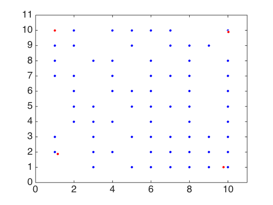

Demo for PAA codes
copyright (c) Sohan Seth, sohan.seth@hiit.fi
Contents
Poisson observation
close all rng default, options = generate_options(); options.verbose = true; options.display = true; options.eps = 10^-10; options.maxIter = 100000; options.matFeatLat = []; n = 100; % Generating data matFeatSam = [ceil(rand(1,n)*10); ceil(rand(1,n)*10)]; % Learning archetypes [matSamLat, matLatSam_1, ~] = paa_Poisson(matFeatSam, 4, options); archetypes = matFeatSam * matSamLat; axis([0 11 0 11]), box on, set(gca, 'fontsize', 20) % Computing projections given archetypes options.matFeatLat = archetypes; options.display = false; [~, matLatSam_2, ~] = paa_Poisson(matFeatSam, [], options); fprintf('difference between projections %0.6f\n', ... norm(archetypes * matLatSam_2 - archetypes * matLatSam_1, 1) / numel(matFeatSam))
.......... [1000] .......... [2000] .......... [3000] .......... [4000] .......... [5000] .......... [6000] .......... [7000] .......... [8000] .......... [9000] .......... [10000] .......... [11000] .......... [12000] .......... [13000] .......... [14000] .......... [15000] .......... [16000] .......... [17000] .......... [18000] .......... [19000] .......... [20000] .......... [21000] .......... [22000] .......... [23000] .......... [24000] .......... [25000] .......... [26000] .......... [27000] ..... convergence reached in 27547 iterations .......... [1000] .......... [2000] .......... [3000] .......... [4000] .......... [5000] .......... [6000] .......... [7000] .......... [8000] .......... [9000] ......... convergence reached in 9991 iterations difference between projections 0.000096
Bernoulli observation
close all rng default, options = generate_options(); options.verbose = true; options.display = true; options.eps = 10^-6; options.maxIter = 1000; options.matFeatLat = []; n = 500; % Generating data matFeatSam = [rand(1,n) > 0.8; rand(1,n) > 0.2]; % Learning archetypes [matSamLat, matLatSam_1, ~] = paa_Bernoulli(matFeatSam, 4, options); archetypes = matFeatSam * matSamLat; axis([-0.1 1.1 -0.1 1.1]), box on, set(gca, 'fontsize', 20) % Computing projections given archetypes options.matFeatLat = archetypes; options.display = false; [~, matLatSam_2, ~] = paa_Bernoulli(matFeatSam, [], options); fprintf('difference between projections %0.6f\n', ... norm(archetypes * matLatSam_2 - archetypes * matLatSam_1, 1) / numel(matFeatSam))
.......... [100] convergence reached in 105 iterations ..... convergence reached in 54 iterations difference between projections 0.000000
Multinomial observations
close all rng default, options = generate_options(); options.verbose = true; options.display = true; options.eps = 10^-6; options.maxIter = 10000; options.matFeatLat = []; n = 500; % Generating data matFeatSam = rand(3, n); matFeatSam = bsxfun(@rdivide, matFeatSam, sum(matFeatSam)); nFeatSam = mnrnd(1000, matFeatSam')'; matFeatSam = bsxfun(@rdivide, nFeatSam, sum(nFeatSam)); % empirical probabilities % Learning archetypes [matSamLat, matLatSam_1, ~] = paa_stochastic(nFeatSam, 3, options); archetypes = matFeatSam * matSamLat; axis([0 1000 0 1000]), box on, set(gca, 'fontsize', 20) % Computing projections given archetypes options.matFeatLat = archetypes; options.display = false; [~, matLatSam_2, ~] = paa_stochastic(nFeatSam, [], options); fprintf('difference between projections %0.6f\n', ... norm(archetypes * matLatSam_2 - archetypes * matLatSam_1, 1) / numel(matFeatSam))
More than two features. Only the first two will be displayed. .......... [100] .......... [200] .......... [300] .......... [400] .......... [500] .......... [600] ..... convergence reached in 657 iterations .. convergence reached in 23 iterations difference between projections 0.000024
Normal observation
close all rng default, options = generate_options(); options.verbose = true; options.display = true; options.eps = 10^-6; options.maxIter = 20; options.matFeatLat = []; n = 100; % Generating data matFeatSam = [rand(1,n); rand(1,n)]; % Learning archetypes [matSamLat, matLatSam_1, ~] = paa_normal(matFeatSam, 4, options); archetypes = matFeatSam * matSamLat; axis([0 1 0 1]), box on, set(gca, 'fontsize', 20) % Computing projections given archetypes options.matFeatLat = archetypes; options.display = false; [~, matLatSam_2, ~] = paa_normal(matFeatSam, [], options); fprintf('difference between projections %0.6f\n', ... norm(archetypes * matLatSam_2 - archetypes * matLatSam_1, 1) / numel(matFeatSam))
alpha 1.00 beta 1.00 [Iteration 1] [Iteration 2] [Iteration 3] [Iteration 4] [Iteration 5] [Iteration 6] [Iteration 7] [Iteration 8] [Iteration 9] [Iteration 10] [Iteration 11] [Iteration 12] [Iteration 13] [Iteration 14] [Iteration 15] [Iteration 16] [Iteration 17] [Iteration 18] [Iteration 19] [Iteration 20] alpha 1.00 beta 1.00 difference between projections 0.001373
Normal observation with R interface
close all rng default, % Generating data matFeatSam = [rand(1,n); rand(1,n)]; % Learning archetypes [matSamLat, matLatSam_1, ~] = classic_aa(matFeatSam, 4); archetypes = matFeatSam * matSamLat; % Computing projections given archetypes matLatSam_2 = classic_aa_test(matFeatSam); fprintf('difference between projections %0.6f\n', ... norm(archetypes * matLatSam_2 - archetypes * matLatSam_1, 1) / numel(matFeatSam))
Loading required package: methods
Loading required package: modeltools
Loading required package: stats4
Loading required package: nnls
R.matlab v3.1.1 (2014-10-10) successfully loaded. See ?R.matlab for help.
Attaching package: 'R.matlab'
The following objects are masked from 'package:base':
getOption, isOpen
*** k=4, rep=1:
*** k=4, rep=2:
*** k=4, rep=3:
*** k=4, rep=4:
*** k=4, rep=5:
*** k=4, rep=6:
*** k=4, rep=7:
*** k=4, rep=8:
*** k=4, rep=9:
*** k=4, rep=10:
Warning messages:
1: In method(..., k = k[i]) :
k=4: Error in qr.solve(alphas %*% t(alphas)): singular matrix 'a' in solve
2: In method(..., k = k[i]) :
k=4: Error in qr.solve(alphas %*% t(alphas)): singular matrix 'a' in solve
Loading required package: methods
Loading required package: modeltools
Loading required package: stats4
Loading required package: nnls
R.matlab v3.1.1 (2014-10-10) successfully loaded. See ?R.matlab for help.
Attaching package: 'R.matlab'
The following objects are masked from 'package:base':
getOption, isOpen
difference between projections 0.000000